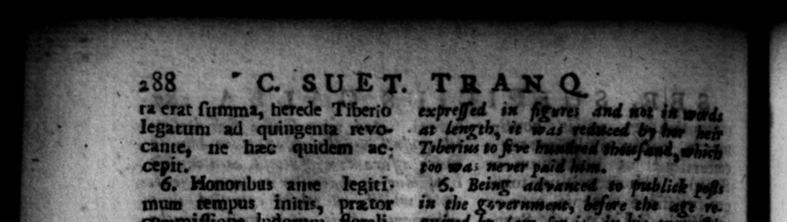
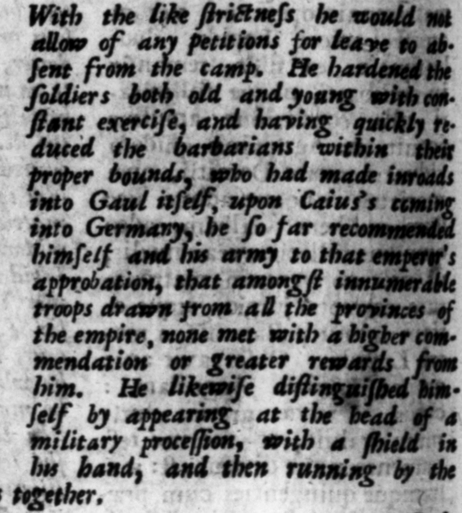

a Ld 7 r 8 um, novum ſpectaculi genus, tos funambulos euidit: exin provinciz Aquitanie an. no fere . preefait : mox conſulatum per ſex menſes ordinarium geſſit. Evenitque ut. in eo iple L. Domitio patri TSA 2 . 4 In Neronis, ipſi Salvius Otho - months e and ter Othoms ſuccederer, velut ſiacceeded L. prelagium in ſequentis caſus, Nero therein, 10 medius inter utriuſ van Otbo fat lios extitit Imperator. 28 name, jo Cie Grtulieo 3 a fi rus, poſtridie quam | nes venir, ſulenni forte ſpectaculo tes inhibuit, da5 K ade win — rn. e he ele verſe da 8 their cloaks. Immediately upon which the common in the camp. Bp | Dufte miles militare, Galba «ft; non Gn s .. Pari ſervitate interdixit com- Ane meatus peti. Veteranum ac titonem militem opere aſſiduo corrobora vit: matu bar baxis, qui jam in — uſe ru t, Ccoerciri N quoque Cajo — & Te & exercitum approbavit, ut inter innumeras contractaſque ex omnibus proVvinciis coptas, neque ceſtimonum neque pramia ampliora ulli 8 Ipſe maxime inſiguis, s campeſtrem roger _—— ratus, etiam um Imperatoxis per viginei paſſnus mils cucurrit. 5 emperor's charriat paemty mile: 08 7

